Rust est un jeu en multijoueur type PVE. Le but du jeu est d’évoluer sur une map assez grande comme celle-ci :
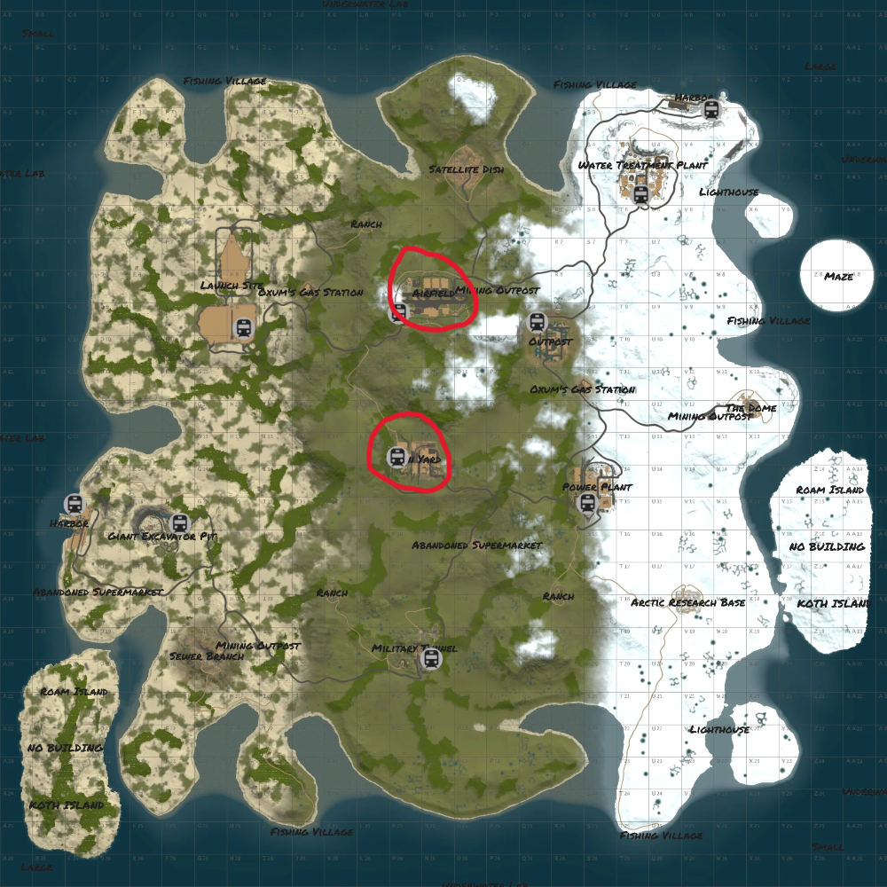
Sur cette carte différents endroits sont présents en peut varier selon les serveurs sur lesquelles vous vous trouvez. Ces endroits sont appelé “RAD” comme entourer en rouge sur la carte.
Dans chacune d’elles se trouve du loot pour pouvoir faire évoluer ses armes mais aussi sa base
Pour pouvoir récupérer ce loot, il faut soit détruire des barils soit trouver des cartes d’accès pour accéder à du loot de meilleure qualité.
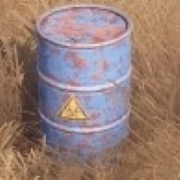
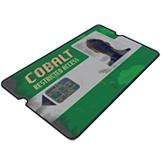
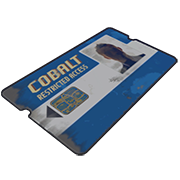
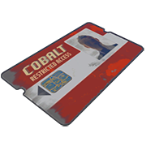
Pour avoir des armes de plus en plus fort ou du matériel pour défendre votre base vous devez aller recycler votre loot que vous avez récolté et pour gagner des “SCRAP”. Avec ces scrap vous pourrez fabriquer des établis de 1 à 3, avec chacun leur objet approprié, mais cela coûte de plus en plus cher.
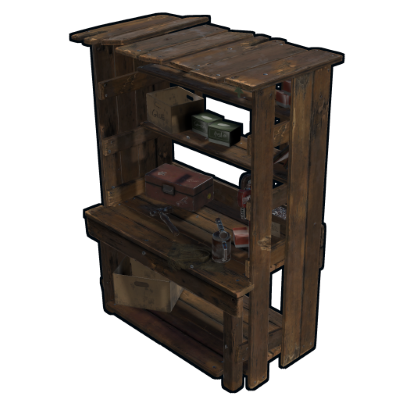
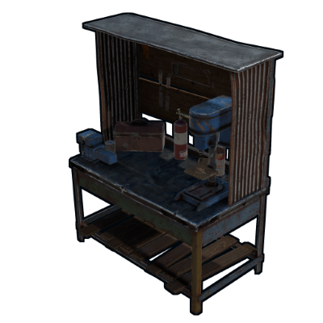
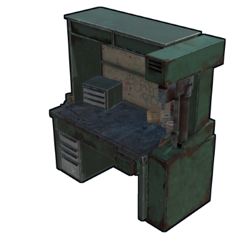
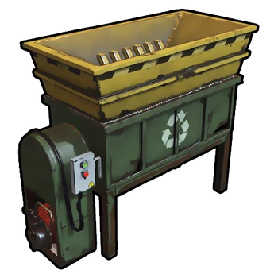
Pour finir voici quelques exemples de base que des joueurs ont créée sur des serveurs allant à plus de 800 joueurs connectés en même temps.
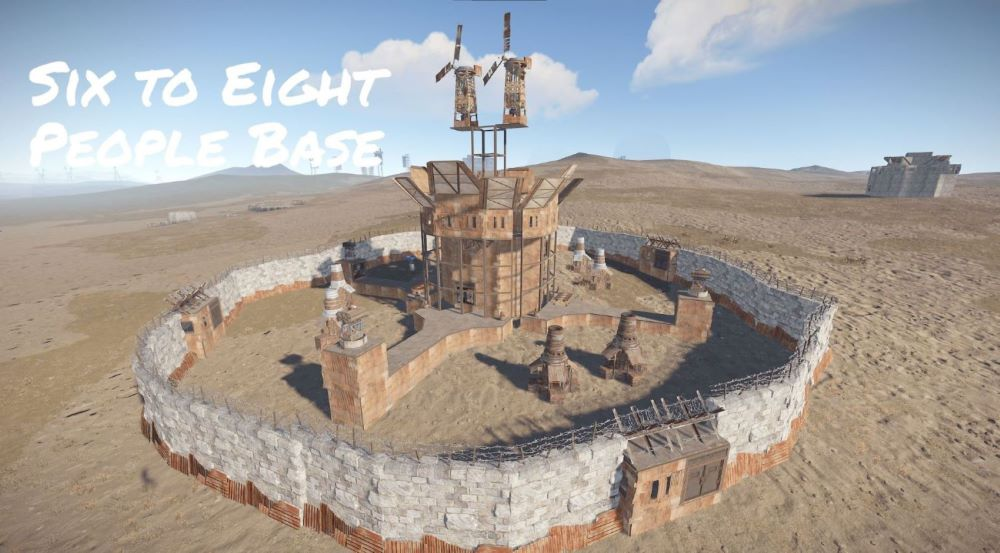
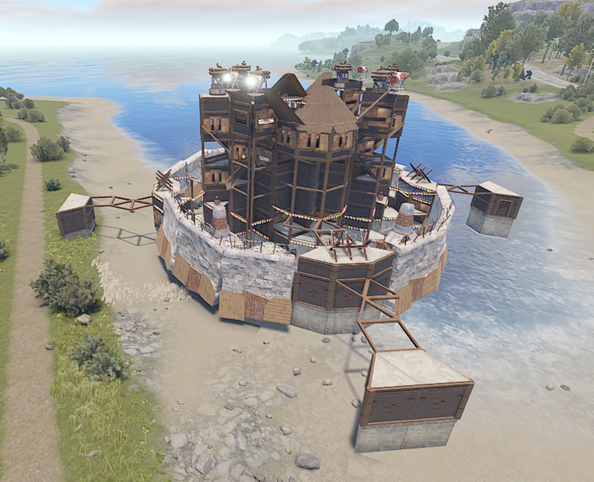